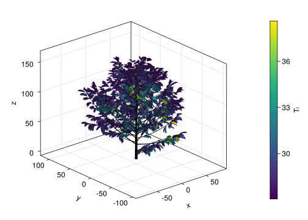

### A Pluto.jl notebook ###
# v0.19.23
using Markdown
using InteractiveUtilsPlantBiophysics.jl 3D global tree simulation
This Pluto notebook presents the computation of Fig. 7 from the scientific article. It displays leaf temperature on a 3D coffee tree simulated by PlantBiophysics.jl. Non-Pluto Julia script is also available (see here).
Importing the dependencies:
Loading the Julia packages:
begin
using PlantBiophysics, PlantGeom, PlantMeteo, PlantSimEngine
using CairoMakie
using BenchmarkTools
using FLoops
using Downloads
using Dates, DataFrames, CSV, Statistics
using MultiScaleTreeGraph
using PlutoUI
nothing
endReading data
MTG file
mtg = read_opf(Downloads.download("https://raw.githubusercontent.com/VEZY/PlantBiophysics-paper/main/notebooks/upscaling/coffee.opf"))
/ 1: Individual
└─ / 2: Axis
├─ < 5: Metamer
├─ < 799: Metamer
│ ├─ + 800: Axis
│ │ ├─ < 806: Metamer
│ │ │ └─ + 807: Axis
│ │ │ ├─ / 808: Metamer
│ │ │ ├─ < 810: Metamer
│ │ │ ├─ < 814: Metamer
│ │ │ │ ├─ + 816: Leaf
│ │ │ │ └─ + 815: Leaf
│ │ │ ├─ < 811: Metamer
│ │ │ │ ├─ + 813: Leaf
│ │ │ │ └─ + 812: Leaf
│ │ │ ├─ < 809: Metamer
│ │ │ └─ < 817: Metamer
│ │ │ └─ + 818: Leaf
│ │ ├─ < 939: Metamer
│ │ │ ├─ + 940: Leaf
│ │ │ └─ + 941: Leaf
│ │ ├─ < 803: Metamer
│ │ ├─ < 926: Metamer
│ │ ├─ < 936: Metamer
│ │ │ ├─ + 938: Leaf
│ │ │ └─ + 937: Leaf
│ │ ├─ < 899: Metamer
│ │ ├─ < 842: Metamer
│ │ │ ├─ + 869: Axis
│ │ │ │ ├─ < 875: Metamer
…Meteorological data
weather = PlantMeteo.read_weather(Downloads.download("https://raw.githubusercontent.com/VEZY/PlantBiophysics-paper/main/notebooks/upscaling/meteo.csv"),
:temperature => :T,
:relativeHumidity => (x -> x ./ 100) => :Rh,
:wind => :Wind,
:VPD => (x -> x ./ 100.0) => :VPD,
:atmosphereCO2_ppm => :Cₐ,
date_format=DateFormat("yyyy/mm/dd")
);
Models list
models = read_model(Downloads.download("https://raw.githubusercontent.com/VEZY/PlantBiophysics-paper/main/notebooks/upscaling/plant_coffee.yml"));[ Info: Some variables must be initialized before simulation: (interception = (:Rᵢ,),) (see `to_initialize()`)
[ Info: Using default values for parameters [:aₛₕ, :aₛᵥ, :ε, :ΔT] in model Monteithmodels["Leaf"]╭──── Dependency graph ──────────────────────────────────────────────────╮ │ ╭──── interception ─────────────╮ │ │ │ ╭──── Main model ─────────╮ │ │ │ │ │ Process: interception │ │ │ │ │ │ Model: Translucent │ │ │ │ │ │ Dep: nothing │ │ │ │ │ ╰─────────────────────────╯ │ │ │ ╰───────────────────────────────╯ │ │ ╭──── energy_balance ──────────────────────────────────────────────╮ │ │ │ ╭──── Main model ───────────╮ │ │ │ │ │ Process: energy_balance │ │ │ │ │ │ Model: Monteith │ │ │ │ │ │ Dep: nothing │ │ │ │ │ ╰───────────────────────────╯ │ │ │ │ │ ╭──── Hard-couple... ───────╮ │ │ │ │ │ │ Process: photosynthesis │ │ │ │ │ └──│ Model: Fvcb │ │ │ │ │ ╰───────────────────────────╯ │ │ │ │ │ ╭──── Hard-coupled model ─────────╮ │ │ │ │ │ │ Process: stomatal_conductance │ │ │ │ │ └──│ Model: Medlyn │ │ │ │ │ ╰─────────────────────────────────╯ │ │ │ ╰──────────────────────────────────────────────────────────────────╯ │ ╰────────────────────────────────────────────────────────────────────────╯ TimeStepTable{Status{(:Rᵢ, :Ra_SW_f, :sky...}(1 x 18): ╭─────┬─────────┬─────────┬──────────────┬─────────┬─────────┬─────────┬──────── │ Row │ Rᵢ │ Ra_SW_f │ sky_fraction │ d │ Tₗ │ Rn │ Ra_LW ⋯ │ │ Float64 │ Float64 │ Float64 │ Float64 │ Float64 │ Float64 │ Float ⋯ ├─────┼─────────┼─────────┼──────────────┼─────────┼─────────┼─────────┼──────── │ 1 │ -Inf │ -Inf │ -Inf │ -Inf │ -Inf │ -Inf │ -I ⋯ ╰─────┴─────────┴─────────┴──────────────┴─────────┴─────────┴─────────┴──────── 12 columns omitted
to_initialize(models["Leaf"])(interception = (:Rᵢ,), photosynthesis = (:aPPFD,), energy_balance = (:Ra_SW_f, :d, :sky_fraction))init_status!(models["Leaf"], Ra_SW_f = 300.0)Adding light interception data: incident radiation
mtg2 = transform(
mtg,
[:Ra_PAR_f, :Ra_NIR_f] => ((x, y) -> x + y * 1.2) => :Rᵢ, # This would be the incident radiation
[:Ra_PAR_f, :Ra_NIR_f] => ((x, y) -> x + y) => :Rₛ,
:Ra_PAR_f => (x -> x * 4.57) => :aPPFD,
(x -> 0.3) => :d,
ignore_nothing=true
)/ 1: Individual
└─ / 2: Axis
├─ < 5: Metamer
├─ < 799: Metamer
│ ├─ + 800: Axis
│ │ ├─ < 806: Metamer
│ │ │ └─ + 807: Axis
│ │ │ ├─ / 808: Metamer
│ │ │ ├─ < 810: Metamer
│ │ │ ├─ < 814: Metamer
│ │ │ │ ├─ + 816: Leaf
│ │ │ │ └─ + 815: Leaf
│ │ │ ├─ < 811: Metamer
│ │ │ │ ├─ + 813: Leaf
│ │ │ │ └─ + 812: Leaf
│ │ │ ├─ < 809: Metamer
│ │ │ └─ < 817: Metamer
│ │ │ └─ + 818: Leaf
│ │ ├─ < 939: Metamer
│ │ │ ├─ + 940: Leaf
│ │ │ └─ + 941: Leaf
│ │ ├─ < 803: Metamer
│ │ ├─ < 926: Metamer
│ │ ├─ < 936: Metamer
│ │ │ ├─ + 938: Leaf
│ │ │ └─ + 937: Leaf
│ │ ├─ < 899: Metamer
│ │ ├─ < 842: Metamer
│ │ │ ├─ + 869: Axis
│ │ │ │ ├─ < 875: Metamer
…!!! note We use transform instead of transform! here to make a copy of the mtg after modification because we shouldn’t mutate objects in Pluto notebooks.
Running the simulation
begin
mtg_sim = deepcopy(mtg2)
# Initialize the models inside the MTG:
init_mtg_models!(mtg_sim, models, length(weather), verbose=false)
# Make the simulation:
run!(mtg_sim, weather)
endBenchmarking
Let’s make a benchmark of the simulation on the whole coffee tree.
begin
mtg_sim_bench = deepcopy(mtg2)
# Initialize the models inside the MTG:
init_mtg_models!(mtg_sim_bench, models, length(weather), verbose=false)
# Make the simulation:
times = @benchmark run!($mtg_sim, $weather)
endBenchmarkTools.Trial: 16 samples with 1 evaluation. Range (min … max): 294.873 ms … 351.567 ms ┊ GC (min … max): 2.61% … 4.54% Time (median): 313.512 ms ┊ GC (median): 4.80% Time (mean ± σ): 317.894 ms ± 16.451 ms ┊ GC (mean ± σ): 4.48% ± 0.79% ▃ █ █▁▁▁▁▁▇▁▁▇▁▁▁▁▇▁▁█▁▁▁▁▇▁▁▁▁▇▁▁▇▁▁▁▁▁▇▁▁▁▁▁▇▁▁▇▇▁▁▁▁▁▁▁▁▁▁▁▁▁▇ ▁ 295 ms Histogram: frequency by time 352 ms < Memory estimate: 82.59 MiB, allocs estimate: 1130880.
nleaves = length(findall(traverse(mtg_sim_bench, node -> node.MTG.symbol == "Leaf")))2179n_meteo_steps = length(weather)3total_time_s = sum(times.times) / length(times.times) * 1e-90.3178939979375The simulation takes \((round((total_time_s * 1e6) / (nleaves * n_meteo_steps), digits = 1)) μs** to run for each leaf, and **\)(round(total_time_s, digits = 2)) s for the whole plant on all time-steps.
!!! warning Benchmarking shouldn’t be done in a Pluto notebook, and especially not on Github CI server that are very slow, but this gives an idea of how fast we can make a simulation, even on very low end hardware, and without parallelization.
Plotting the result in 3D
f = let
f = Figure()
ax = Axis3(f[1, 1], aspect=:data)
p = viz!(ax, mtg_sim, color=:Tₗ, index=1)
colorbar(f[1, 2], p)
f
endObservable((27.048340136571866, 38.613736428598415))
save("3d_coffee.png", f);